Picture this: Your Flutter app encounters an unexpected behavior in production, and you're left scrambling to understand the problem buried within lines of code. Frustrating, isn't it?
For Backend and Web Developers, sifting through server logs is a common solution. But what about Flutter Developers?
While the popular Firebase Crashlytics or other bug-tracking tools can help offers a solution for app crashes, it has limitations. It only retains the most recent eight exceptions per session, potentially losing valuable insights if your app encounters more exceptions (source).
So, what's the solution? How do you debug your Flutter app in production without direct access to users' devices?
What is Remote Logging?
Remote logging is a technique to log events from your app to a remote server. Creating possibilities for monitoring, analyzing, alerting, visualizing, understanding user behaviour, identifying bugs, and optimizing app performance in production environments.
Why is Remote Logging Important?
As a developer, one of the simplest and most popular debugging techniques is examining application logs. Remote logging extends this capability to production environments, allowing you to address issues that may impact your users. It provides valuable insights for fixing bugs and offers real-time alerts when issues occur, as emphasized by Dane Mackier - FilledStacks.
Remote logging available options for Flutter
While several solutions exist for remote logging, including Sentry, AWS CloudWatch, logging_appenders and many more, this codelab focuses on Cloud Logging.
Why Cloud Logging?
It's a fully managed service designed for storing, searching, analyzing, visualizing and alerting on log data and events, making it ideal for monitoring and optimizing your Flutter app.

Setting up Remote Logging in Flutter app with Cloud Logging
Authentication with Google Cloud Platform
This is necessary to write logs to Cloud Logging. There are two options:
Option 1:
Using the google-sign-in plugin in conjunction with the extension_google_sign_in_as_googleapis_auth package, this approach is suitable for user authentication and authorization.
Option 2:
Using a Service Account for autonomous application authentication. This is the approach we'll explore in this codelab.
Click Next let's get started! 🚀
Create a Service Account
Navigate to the Google Cloud Console and select your project.
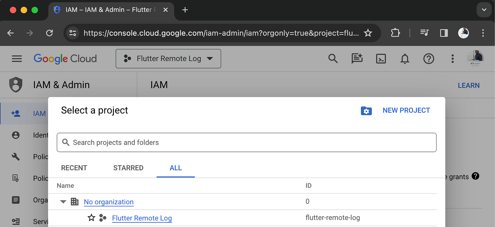
In the left-hand navigation, click on the IAM & Admin and then click on
Service Accounts.
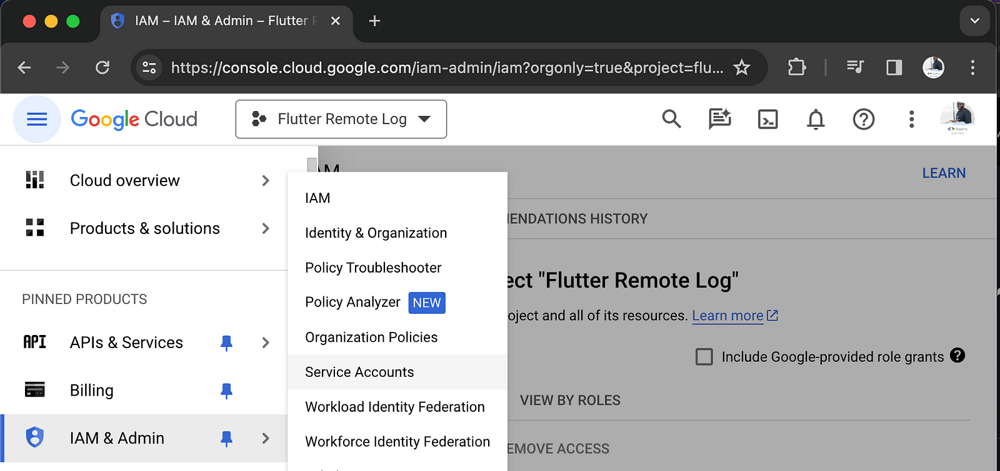
- Fill in the service account details and click on
CREATE AND CONTINUE.
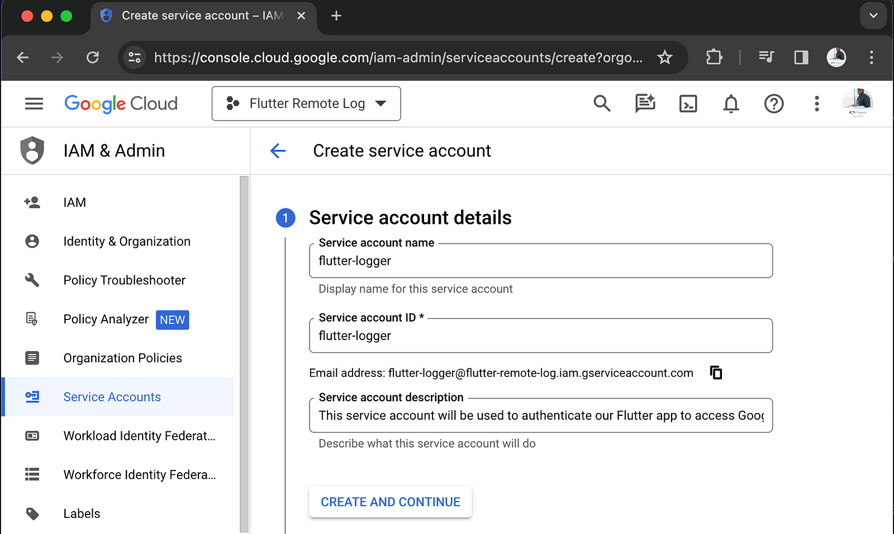
- Grant this service account access to the project, click on
Select a roleand search forlogs writerand then click onLogs Writerwhich gives the service account access to write logs, and click onCONTINUE.
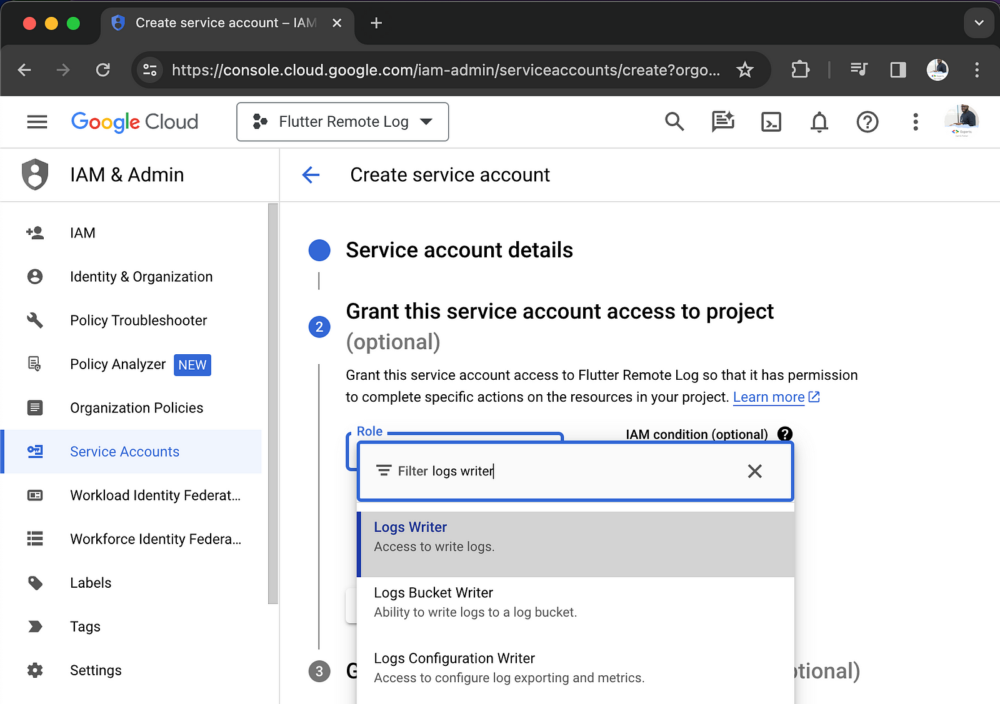
- We don't need to grant any users access to this service account, so click on
DONE.
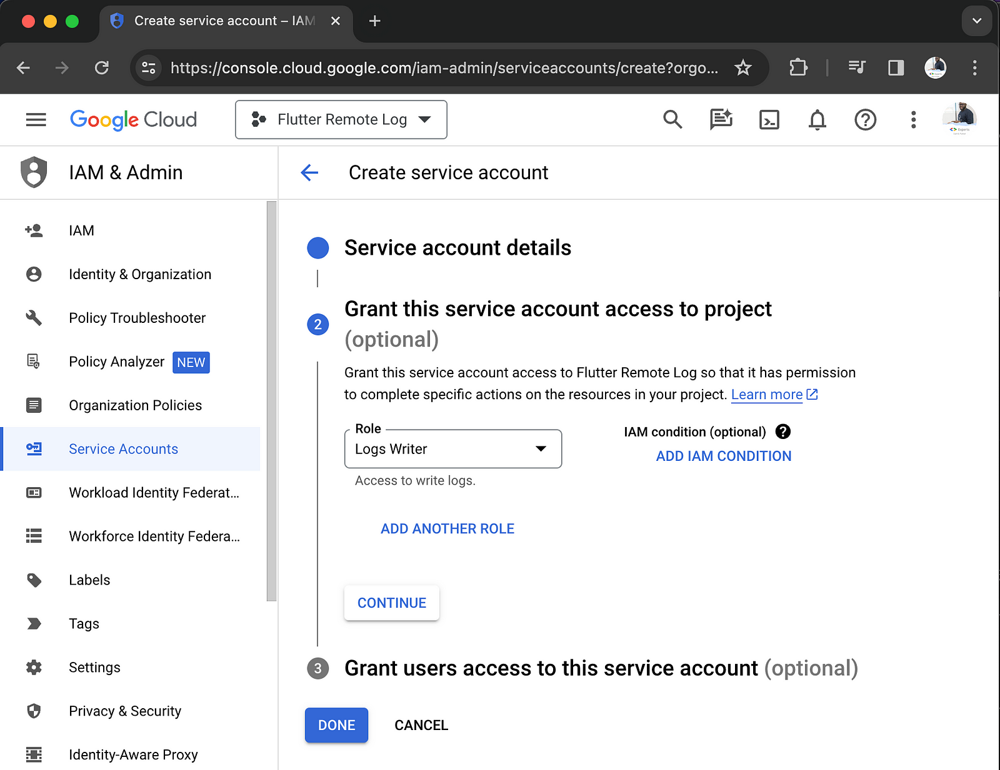
- Create a
Keyfor the service account, click onKeystab and thenADD KEYand selectCreate new key. SelectJSONand click onCREATE.
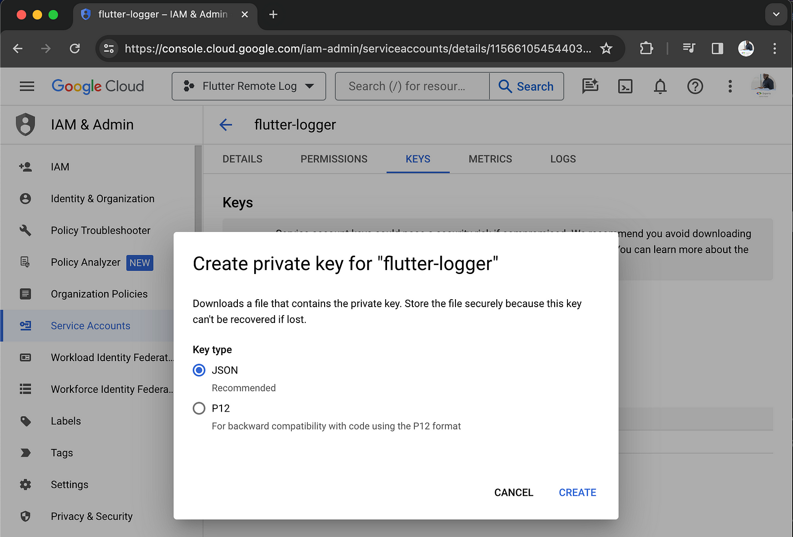
The JSON key file will be downloaded to your computer. As seen below.
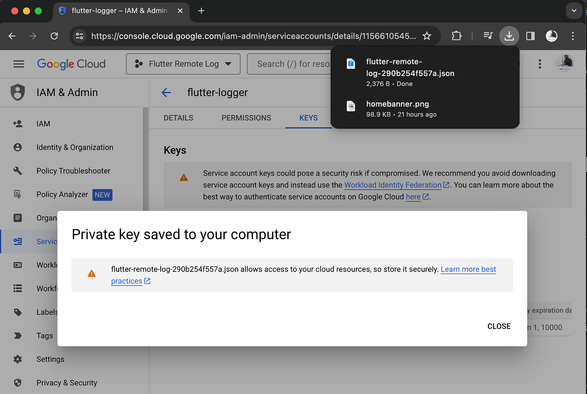
Enable Cloud Logging API
Navigate to Cloud Logging API and then click on ENABLE.
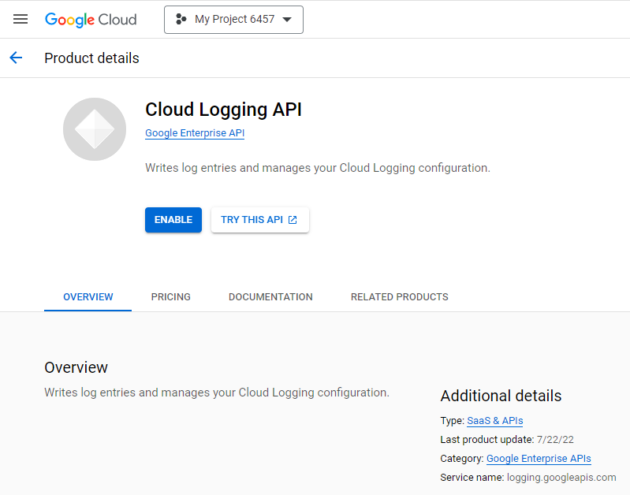
Create or Open a Flutter Project
Open your Flutter project or create a new Flutter project by running
flutter create flutter_remote_logging from a command line.
We will use the googleapis and
googleapis_auth packages to
authenticate the Flutter app to access Cloud Logging. Also, we will use the logger package to log events from our
app to Cloud Logging with severity levels. This enables filtering logs based on severity, such as displaying
only ERROR-level logs.
Run the following command from a command line to add the packages to your Flutter app:
flutter pub add googleapis googleapis_auth logger
Authenticate the Flutter app to Access Cloud Logging
Create a new service or a new Dart file called google_cloud_logging_service.dart and add the
following code:
import 'package:flutter/foundation.dart';
import 'package:googleapis/logging/v2.dart';
import 'package:googleapis_auth/auth_io.dart';
// Define constants for authentication and project identification
const _serviceAccountCredentials = {
// Replace with the content of the JSON key file
"type": "service_account",
// ...
// ...
// ...
};
const _projectId = 'YOUR_PROJECT_ID'; // Replace with your project ID from the JSON key file
class GoogleCloudLoggingService {
late LoggingApi _loggingApi; // Instance variable for Cloud Logging API
bool _isSetup = false; // Indicator to check if the API setup is complete
// Method to set up the Cloud Logging API
Future<void> setupLoggingApi() async {
if (_isSetup) return;
try {
// Create credentials using ServiceAccountCredentials
final credentials = ServiceAccountCredentials.fromJson(
_serviceAccountCredentials,
);
// Authenticate using ServiceAccountCredentials and obtain an AutoRefreshingAuthClient authorized client
final authClient = await clientViaServiceAccount(
credentials,
[LoggingApi.loggingWriteScope],
);
// Initialize the Logging API with the authorized client
_loggingApi = LoggingApi(authClient);
// Mark the Logging API setup as complete
_isSetup = true;
debugPrint('Cloud Logging API setup for $_projectId');
} catch (error) {
debugPrint('Error setting up Cloud Logging API $error');
}
}
}
Let's quickly understand the code above:
- We created a
GoogleCloudLoggingServiceclass that will be responsible for setting up the Cloud Logging API and writing logs to Cloud Logging. - Using the JSON key file we downloaded, we defined a constant
_serviceAccountCredentialsto store the content of the JSON key file. We also defined another constant_projectIdto store the project ID from the JSON key file.
- We are using the
latekeyword to declare the_loggingApiinstance variable because we will initialize it in thesetupLoggingApi()method. - It includes a method
setupLoggingApi()to initialize and authenticate the Cloud Logging API. - The class maintains a flag
_isSetupto track whether the API setup is complete or not, which is used to prevent multiple setups of the API with the same instance.
If everything is set up correctly, your project structure should look similar to this:
flutter_project
├── android
├── ios
├── lib
│ ├── google_cloud_logging_service.dart
│ └── main.dart
├── test
├── web
├── pubspec.yaml
└── ...
Using the Logger package we added,
let's update the google_cloud_logging_service.dart file to include the writeLog()
method:
...
import 'package:logger/logger.dart';
...
...
...
class GoogleCloudLoggingService {
...
...
...
void writeLog({required Level level, required String message}) {
if (!_isSetup) {
// If Logging API is not setup, return
debugPrint('Cloud Logging API is not setup');
return;
}
// Define environment and log name
const env = 'dev';
const logName = 'projects/$_projectId/logs/$env'; // It should in the format projects/[PROJECT_ID]/logs/[LOG_ID]
// Create a monitored resource
final resource = MonitoredResource()..type = 'global'; // A global resource type is used for logs that are not associated with a specific resource
// Map log levels to severity levels
final severityFromLevel = switch (level) {
Level.fatal => 'CRITICAL',
Level.error => 'ERROR',
Level.warning => 'WARNING',
Level.info => 'INFO',
Level.debug => 'DEBUG',
_ => 'NOTICE',
};
// Create a log entry
final logEntry = LogEntry()
..logName = logName
..jsonPayload = {'message': message}
..resource = resource
..severity = severityFromLevel
..labels = {
'project_id': _projectId, // Must match the project ID with the one in the JSON key file
'level': level.name.toUpperCase(),
'environment': env, // Optional but useful to filter logs by environment
'user_id': 'your-app-user-id', // Useful to filter logs by userID
'app_instance_id': 'your-app-instance-id', // Useful to filter logs by app instance ID e.g device ID + app version (iPhone-12-ProMax-v1.0.0)
};
// Create a write log entries request
final request = WriteLogEntriesRequest()..entries = [logEntry];
// Write the log entry using the Logging API and handle errors
_loggingApi.entries.write(request).catchError((error) {
debugPrint('Error writing log entry $error');
return WriteLogEntriesResponse();
});
}
}
The method writeLog() is to write log entries to the Cloud Logging. It constructs log entries
using the provided Level and message from the Logger package.
In the main.dart file, update with the following code:
import 'package:flutter/foundation.dart';
import 'package:flutter/material.dart';
import 'package:flutter_remote_logging/google_cloud_logging_service.dart';
import 'package:logger/logger.dart';
final log = Logger();
final googleCloudLoggingService = GoogleCloudLoggingService();
Future<void> main() async {
WidgetsFlutterBinding.ensureInitialized();
// Setup Cloud Logging API
await googleCloudLoggingService.setupLoggingApi();
// Use the output listener from the Logger package to write logs to Cloud Logging
Logger.addOutputListener((event) {
if (kReleaseMode) { // Only write logs to Cloud Logging in release mode
googleCloudLoggingService.writeLog(
level: event.level,
message: event.lines.join('\n'), // Join the log lines with a new line, so that it is written as a single message
);
debugPrint('App will log output to Cloud Logging');
}
});
log.i('App started');
runApp(const MyApp());
}
From the code above, as our app is starting, we call the setupLoggingApi() method from the
GoogleCloudLoggingService instance to authenticate our Flutter app to access Cloud Logging. We then
use the output listener from the Logger package to write logs to Cloud Logging only in release mode,
as this is the main mode we want to log, monitor and analyze activities in the Flutter app.
🥳 We are all set and ready to write logs to Cloud Logging. You can write logs from anywhere in the Flutter app
using the Logger package.
For this codelab, I used the counter app to showcase some logs. I added the following logs to the
_incrementCounter() method in the main.dart file, such that when you click on the
counter button, it logs the following:
void _incrementCounter() {
log.i('User tapped on the button');
log.e('Error occurred while fetching data');
log.w('Warning: User is offline');
log.f('A fatal error occurred' '$_counter');
log.d('Debug: User data fetched successfully');
log.t('Verbose: User data fetched successfully');
...
...
}
You can now run the Flutter app and if everything is set up correctly, you should see the logs in your console.
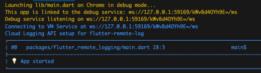
Click on the counter button to trigger the logs.
Congratulations! 👏🏾 You have successfully set up remote logging in your Flutter app with Cloud Logging.

You can view logs in Cloud Logging by navigating to the Google Cloud Console and selecting your project. In the left-hand navigation, click on "Logging" and then "Logs Explorer" or click on the following link Logs Explorer.
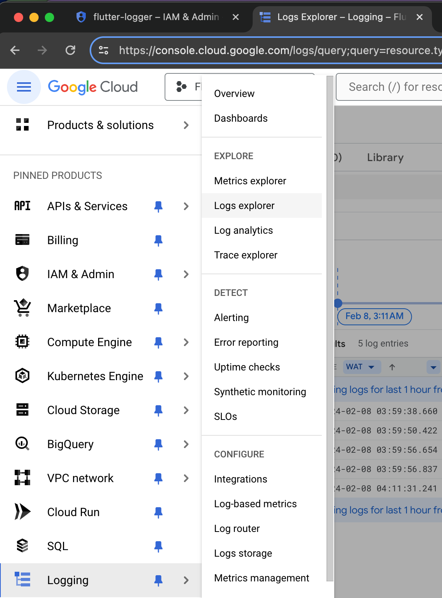
You can filter logs by severity level, log name, resource type, and
time range. If at any point a log is not clear, click on the log entry to view the log details and
then click on Explain this log entry to get AI-ML-powered insights into the log entry.
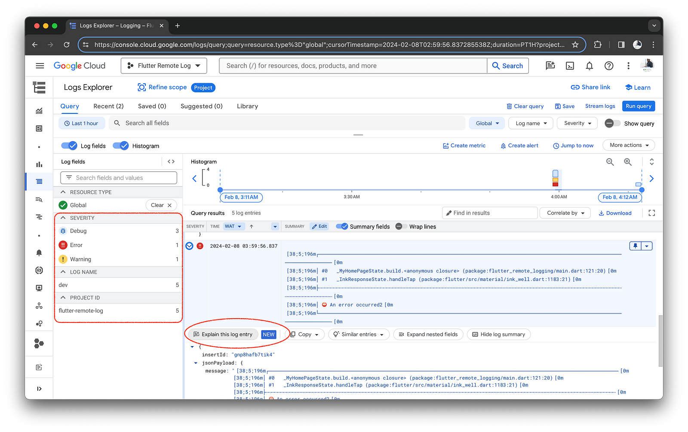
You can also create logs-based metrics and alerts to monitor and alert on logs
entries in the Flutter app. For example, you can create a logs-based metric to count the number of logs with a
severity level of CRITICAL and then create an alert to notify you when the count exceeds a certain
threshold in Slack, Email, or any other notification channel based on your policy.
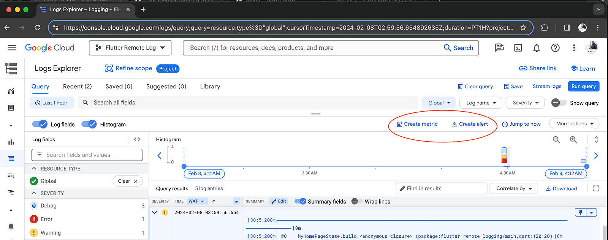
Another good use case is to monitor users' behaviour. If you want to know if users are using a feature or not, you can add a log monitoring for that and alert if the usage is low. This is something we cannot achieve with Crashlytics alone, and it is very important to understand user behaviour because it can help us remove unused code. As a developer, less code, little maintenance, fewer bugs, and more quality app 😋.
For more information, you can refer to the Cloud Logging documentation.
We've explored the setup of a game-changing solution for Flutter remote logging using Cloud Logging. You now understand the significance of remote logging, how to set it up in your Flutter app, and how to effectively monitor and analyze issues.
For clearer and more organized log output, consider leveraging Stacked Architecture. It provides a more organized and structured way to log events in your Flutter app. You can refer to the stackedLoggerGenerator in the stacked_generator package for more information.
Remote logging is indispensable for any high-quality production Flutter app. Research indicates that successful reliability is significantly associated with observability in systems (source). Remote logging facilitates faster and more accurate issue resolution, ultimately enhancing the quality of Flutter apps.
Thank You! 🙌🏾
Thank you for completing this codelab! I hope you enjoyed the codelab. 😊 Until next time, Help contribute to this codelab by: